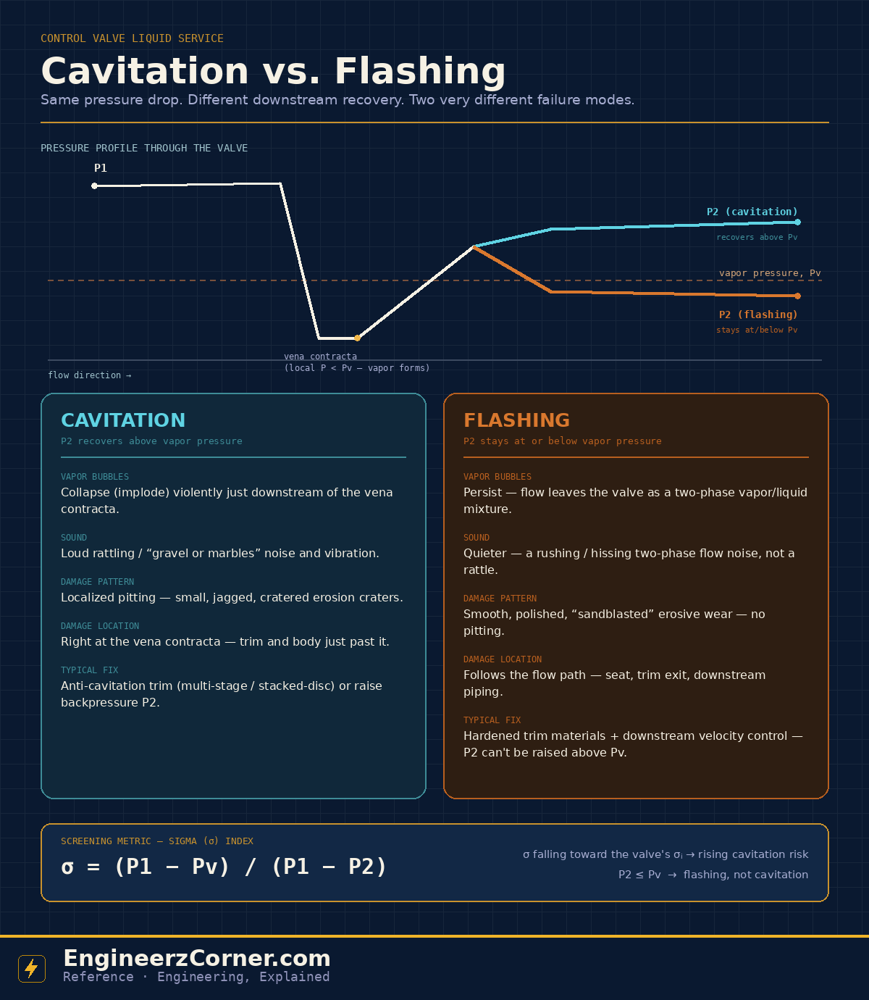

On a P&ID they look like the same failure — a control valve that's chewing itself up on liquid service. But cavitation and flashing are two different physical events with two different damage signatures, and mixing them up leads to the wrong fix: specifying an expensive anti-cavitation trim on a valve that's actually flashing does nothing, because the problem it's built to solve never occurs.

Cavitation vs. flashing in a liquid control valve — same vena-contracta pressure dip, different downstream recovery.
1. The shared starting point: vapor pressure
Inside a control valve, flow accelerates and squeezes through its narrowest point — the vena contracta, just past the throttling point — before slowing back down and recovering pressure downstream. Squeezing the flow that fast means local static pressure drops sharply at the vena contracta, sometimes well below the upstream pressure P1.
If that local pressure falls below the liquid's vapor pressure at process temperature (Pv), the liquid flashes to vapor right there — tiny vapor bubbles form in the flow stream. This part is identical in both cavitation and flashing. The difference is entirely about what happens to those bubbles next, as the flow decelerates and pressure tries to recover toward the downstream pressure, P2.
2. Cavitation — the bubbles collapse
If P2 recovers back above Pv, the vapor bubbles that formed at the vena contracta are swept into a higher-pressure region and collapse (implode) almost as quickly as they formed. That implosion is violent on a microscopic scale — it's what produces the classic cavitation symptoms: a loud rattling noise that's often described as gravel or marbles running through the pipe, vibration, and highly localized pitting damage on the trim and body immediately downstream of the vena contracta.
Fix strategy: since cavitation only happens because pressure dips below Pv and then recovers above it, the fix is to control that recovery path — anti-cavitation trims (multi-stage, stacked-disc, or drilled-hole designs) break the total pressure drop into smaller stages so no single stage drops below Pv, or the downstream backpressure P2 can be raised where the process allows it.
3. Flashing — the bubbles never collapse
If P2 stays at or below Pv, the vapor bubbles never see a high-enough pressure to collapse — they persist all the way downstream, and the valve discharges a genuine two-phase vapor/liquid mixture. There's no implosion, so flashing is quieter than cavitation, more of a rushing or hissing two-phase flow noise. But the accelerated vapor and liquid droplets erode the valve trim, seat and downstream piping in a smooth, polished, "sandblasted" pattern that follows the flow path, rather than the localized pitting craters cavitation leaves behind.
Fix strategy: staged anti-cavitation trim can't fix flashing, because P2 itself is fixed below Pv by the process — there's no pressure-recovery point downstream where staging would help. Instead the strategy shifts to hardened, erosion-resistant trim materials and sizing/routing to control velocity in the downstream piping, since that's where the erosive two-phase jet does its work.
| Cavitation | Flashing | |
|---|---|---|
| Downstream pressure, P2 | Recovers above Pv | Stays at or below Pv |
| Vapor bubbles | Form, then collapse (implode) | Form and persist to outlet |
| Noise | Loud rattling / "gravel" | Quieter rushing / hissing |
| Damage pattern | Localized pitting, jagged craters | Smooth, polished erosive wear |
| Damage location | At/just past the vena contracta | Seat, trim exit, downstream piping |
| Typical fix | Anti-cavitation trim, raise P2 | Hardened trim, velocity control |
4. Screening it with the sigma (σ) index
Before picking a trim, a quick screening check uses the service's operating pressures against a sigma index:
As σ falls toward the valve's own incipient-cavitation sigma (σᵢ — trim- and manufacturer-specific), cavitation risk rises; a comfortable margin is generally σ ≥ 1.5·σᵢ. Flashing is identified separately: whenever P2 ≤ Pv, the valve is flashing rather than cavitating, since downstream pressure never gets back above vapor pressure at all.
Quick understanding
P2 recovers above Pv. Vapor bubbles implode downstream of the vena contracta — loud, and damage shows up as localized pitting right where they collapse.
P2 stays at or below Pv. Vapor never collapses — the valve discharges two-phase flow, and damage shows up as smooth erosive wear along the flow path instead.
Both conditions start from the same event — local pressure at the vena contracta dropping below Pv — so a valve can only be screened correctly once P1, P2 and Pv for the actual operating case are known, not assumed.
Key takeaways
- ✓Cavitation and flashing both start with the same event: local pressure at the vena contracta dropping below the fluid's vapor pressure, Pv.
- ✓Cavitation = P2 recovers above Pv, vapor bubbles collapse, and damage is loud, localized pitting near the vena contracta.
- ✓Flashing = P2 stays at or below Pv, vapor persists, and damage is quieter, smooth erosive wear along the flow path.
- ✓The sigma index σ = (P1 − Pv)/(P1 − P2) screens cavitation risk; P2 ≤ Pv flags flashing instead, where staged trims won't help.
- ✓Trim-specific incipient-cavitation sigma (σᵢ) and manufacturer sizing software give the definitive answer for a specific valve and service.